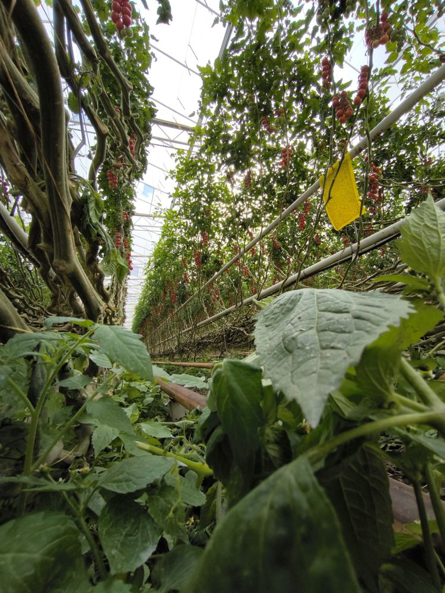

1
The pest
Whiteflies are tiny insects that live on the young leaves at the top of tomato plants and lay their eggs there. Eggs take about three weeks to become adults, so an infestation grows quietly before it shows.